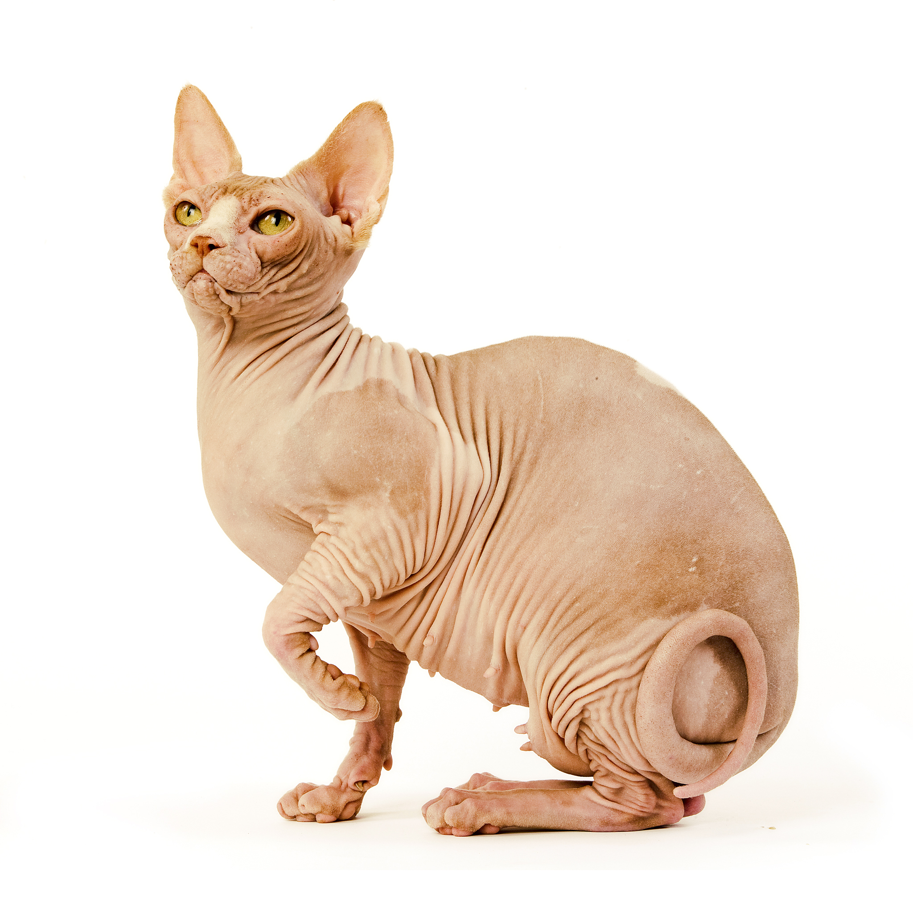

Канадский сфинкс
Характеристика
| Образ жизни | В помещении |
| Тип шерсти | Бесшерстная |
| Размер | Средний |
| Образ жизни | В помещении |
| Тип шерсти | Бесшерстная |
| Размер | Средний |
Кошка породы сфинкс — бесшерстная (иначе говоря, лысая), среднего размера, с крепким костяком и хорошо развитой мускулатурой. Кожа со складками на теле, голове и конечностях, очень теплая на ощупь. Большие уши с высоким поставом и лимоновидные глаза придают морде совершенно неповторимое выражение. Ещё одной отличительной характеристикой породы канадских сфинксов является длинный хлыстообразный хвост.
По своему характеру канадские сфинксы - кошки покладистые, жизнерадостные и сообразительные. Они радушно приветствуют гостей и хорошо уживаются с собаками и другими домашними животными. Они благосклонно реагируют на процедуры ухода. Эти питомцы очень активны, способны развлекаться самостоятельно и могут научиться носить поноску - приносить брошенный предмет. Кроме того, этот вид кошачьих отличается умом, верностью и преданностью своему владельцу.
Голые кошки (без шерсти) время от времени рождались в разных странах на протяжении всей своей истории. Пожалуй, самой известной из них является мексиканская бесшерстная. Она появилась еще в доколумбовую эпоху и упомянутая в начале XX века в «Книге о кошках» Френсис Симпсон. Встречались они и в других регионах, например, в России, где были сформированы две официально признанные породы: донской сфинкс и петерболд. Канадский сфинкс - кошка, появившаяся в 60-е годы XX века. Именно тогда в помете одной домашней кошки в Онтарио (Канада) родился бесшерстный котенок. Попытки продолжить породу с его участием увенчались успехом. Коты сфинксы начали набирать популярность сначала у себя на родине, а потом и за её пределами.